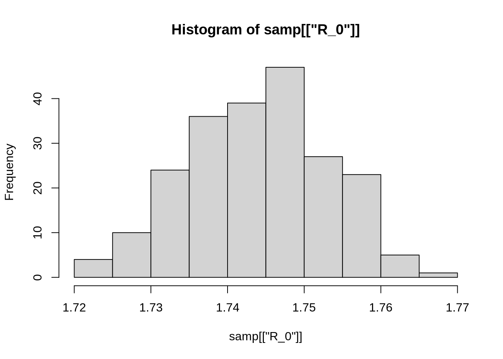
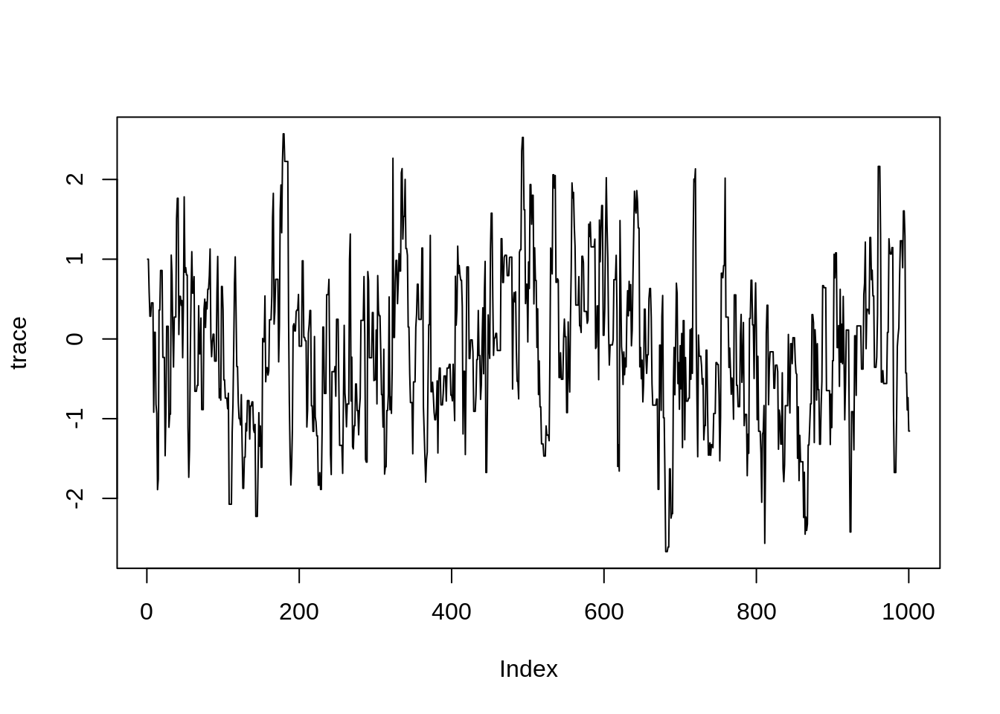
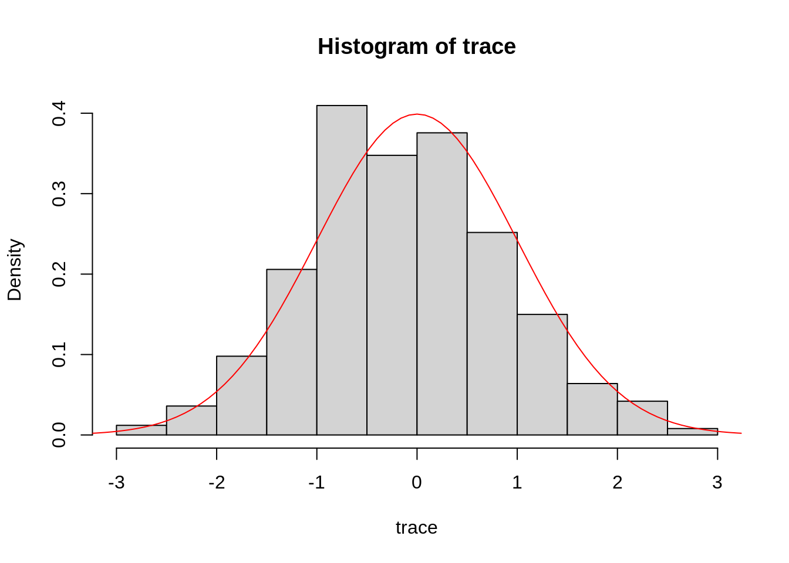

Lecture slides: PowerPoint / PDF
The aim of this session is to learn how to sample from a posterior distribution using MCMC with the Metropolis-Hastings algorithm. More specifically, in this session you will
This code runs the SIR model with a sequence of different values for \(R_0\), saving the values of \(R_0\) and associated posterior probabilities along the way.
theta <- c(R_0 = 3, D_inf = 2) # parameter vector
initState <- c(S = 999, I = 1, R = 0) # initial conditions
grid <- NULL # set aside to hold the grid approximation
# Loop through each value of R_0 we want to test.
for (testR0 in seq(1.6, 1.9, length.out = 25))
{
# Set R_0 in theta accordingly
theta[["R_0"]] <- testR0
# Evaluate the log posterior associated with this R_0
lp <- my_dLogPosterior(sirDeter, theta, initState, epi1)
# Save this iteration, using rbind to add another row to the grid data frame
grid <- rbind(grid, data.frame(R_0 = testR0, lp = lp))
}Run the code above, first making sure that my_dLogPosterior, sirDeter, and epi1 are still available from the previous session.
The grid approximation is now in the data frame grid. Have a look at it:
head(grid)## R_0 lp
## 1 1.6000 -286.9860
## 2 1.6125 -258.5429
## 3 1.6250 -232.9494
## 4 1.6375 -210.1697
## 5 1.6500 -190.1610
## 6 1.6625 -172.8743Each row should show a value for \(R_0\) and the associated log posterior probability.
We can find the maximum a posteriori probability estimate (MAP) by inspection of the data frame, or locate the associated value of \(R_0\) using which.max as follows.
max_row <- which.max(grid[["lp"]]) # row of MAP estimate
grid[max_row, ] # log posterior probability and R_0 at that rowWhich value of R0 has the highest posterior probability? Does this match what you found in the previous session?
We can also plot our grid approximation of the posterior distribution:
plot(x = grid[["R_0"]], y = exp(grid[["lp"]]), type = "p", xlab = "R_0", ylab = "posterior")Note the values on the Y axis. Why are they so small?
We can also estimate the mean posterior value of \(R_0\) using a weighted mean, weighting each grid evaluation by its posterior probability.
weighted.mean(grid[["R_0"]], w = exp(grid[["lp"]]))Improving the grid approximation
From the plot above, it should be clear that we may not have approximated the posterior distribution very well – we only found a few points for \(R_0\) that are substantially supported by the data. This means that weighted.mean above will only be influenced by a small number of values. We also may not have as accurate an estimate for \(R_0\) as we might like to have.
In the code above, the expression seq(1.6, 1.9, length.out = 25) sets up a grid with 25 points for \(R_0\) ranging from 1.6 to 1.9. How does exploring a smaller range of values for \(R_0\) – or generating more points – change the MAP estimate, the estimate of the mean posterior value for \(R_0\), and the plot of the approximated posterior distribution?
This code uses rejection sampling to sample from the posterior distribution of \(R_0\).
# max_lp should be greater than, but not too much greater than,
# the maximum log posterior of the target distribution
max_lp <- -122.7
# samp will hold the samples
samp <- NULL
# Make 1000 attempts to draw samples from the target distribution
for (i in 1:1000)
{
# Select a random value for R_0
my_R_0 <- runif(1, 1.7, 1.8)
theta[["R_0"]] <- my_R_0
# Run the simulation to evaluate the log posterior
lp <- my_dLogPosterior(sirDeter, theta, initState, epi1)
# Warn if max_lp is too low
if (lp > max_lp) {
message("max_lp has been set too low: max_lp is ", max_lp, ", while lp is ", lp);
}
# Keep this sample with probability proportional to the log posterior
if (runif(1) < exp(lp - max_lp)) {
samp <- rbind(samp, data.frame(R_0 = my_R_0, lp = lp))
}
}Run it, then take a look at what’s in samp.
head(samp)## R_0 lp
## 1 1.757730 -124.1808
## 2 1.745258 -122.7705
## 3 1.742299 -122.7582
## 4 1.748987 -122.9633
## 5 1.734669 -123.3087
## 6 1.739623 -122.8553How can we use the samples in samp to characterise the posterior distribution of \(R_0\)?
One way is to plot a histogram of the samples:
hist(samp[["R_0"]])
Your plot will probably look different, since the code above uses random sampling. We can also calculate some summary statistics, for example:
mean(samp[["R_0"]])
sd(samp[["R_0"]])
quantile(samp[["R_0"]])Note that we are not using “weighted” versions of any of these standard statistical summaries, because each sample of \(R_0\) in samp is already present with a probability proportional to its posterior probability.
For this reason, in many ways it can be easier to work with samples than with a grid approximation, since we don’t have to worry about any points in the sample having a different weight.
Since we have, nonetheless, kept track of the log posterior probability of each sample, we can still get an estimate of the MAP for \(R_0\), similarly to how we did it before.
samp[which.max(samp[["lp"]]), "R_0"]Questions for discussion:
Having been introduced to grid approximation and rejection sampling, we will now learn how to sample from a posterior distribution using MCMC with the Metropolis-Hastings algorithm.
Code it yourself: In the next session you will write a function that samples from an arbitrary target distribution using MCMC. For now, let us focus on sampling from an univariate distribution, i.e. that has a single parameter, and use a standard Gaussian proposal distribution \(q(\theta'|\theta)\). The MCMC function we want to write should take four arguments:
The MCMC function should evaluate the target distribution at the given initial parameter value, and then apply the Metropolis-Hastings algorithm for the specified number of iterations.
Below you will find the skeleton of such a MCMC function. We have inserted comments before every line that you should insert. If you are struggling at any point, click on the link below the code for a more guided example.
A few useful tips:
rnorm, see ?rnorm.runif(n = 1).# This is a function that takes four arguments:
# - target: the target distribution, a function that takes one argument
# (a number) and returns the (logged) value of the
# distribution of interest
# - initTheta: the initial value of theta, the argument for `target`
# - proposalSd: the standard deviation of the (Gaussian) proposal distribution
# - nIterations: the number of iterations
# The function should return a vector of samples of theta from the target
# distribution
my_mcmcMh <- function(target, initTheta, proposalSd, nIterations) {
# evaluate the function "target" at parameter value "initTheta"
# initialise variables to store the current value of theta, the
# vector of samples, and the number of accepted proposals
# repeat nIterations times:
# - draw a new theta from the (Gaussian) proposal distribution
# with standard deviation sd.
# - evaluate the function "target" at the proposed theta
# - calculate the Metropolis-Hastings ratio
# - draw a random number between 0 and 1
# - accept or reject by comparing the random number to the
# Metropolis-Hastings ratio (acceptance probability); if accept,
# change the current value of theta to the proposed theta,
# update the current value of the target and keep track of the
# number of accepted proposals
# - add the current theta to the vector of samples
# return the trace of the chain (i.e., the vector of samples)
}If you have trouble filling any of the empty bits in, have a look at our more guided example.
In principle, we can use the Metropolis-Hastings sampler you just coded to sample from any target distribution. Before that, and to make sure it works, we are going to test it on a simple distribution. Imagine you didn’t know how to draw random numbers from a Normal distribution. You could use the Metropolis-Hastings sampler to do this. In R, the function to evaluate the probability density of a number under a Normal distribution is called dnorm. It looks like this
plot(dnorm,
xlim = c(-5, 5),
ylab = "probability density")We want to generate random numbers that follow the same distribution. There is one small extra step we have to do before we can sample from dnorm. Remember that we have set up the Metropolis-Hastings sampler above to expect the target distribution to return the logarithm of the probability density, whereas dnorm, by default, returns the (un-logged) probability density.
We can, however, instruct dnorm to return the logarithm of the probability density using the argument log = TRUE, and we use a wrapper function to do so. To sample, for example, from a normal distribution centred around 0, with standard deviation 1, we define a function that takes one argument and returns the logarithm of the probability density at the argument from such a normal distribution
dnormLog <- function(theta) {
return(dnorm(x = theta, mean = 0, sd = 1, log = TRUE))
}We can now sample from dnormLog using our MCMC sampler
startingValue <- 1 # starting value for MCMC
sigma <- 1 # standard deviation of MCMC
iter <- 1000
trace <- my_mcmcMh(target = dnormLog, initTheta = startingValue,
proposalSd = sigma, nIterations = iter)We will talk later about diagnosing the trace (i.e., the sequence of samples) of an MCMC run. For now, you can visualise the trace of your MCMC run using
plot(trace, type = "l")
You can plot a histogram of the samples generated using the function hist. Here, since the target is known, you can also check that your samples are normally distributed by using the function curve:
hist(trace, freq = FALSE)
curve(dnorm, from = -4, to = 4, col="red", add=TRUE)
This example looks reassuringly similar to the normal distribution centred around 0. Of course, since MCMC is based on sampling random numbers, your plot will look slightly different.
Take 10 minutes to try different values for initTheta and proposalSd. How do these affect the plots of the trace and the histogram?
We can now use our Metropolis-Hastings sampler to sample from the posterior distribution of the previous practical. You should have a my_dLogPosterior function that evaluates the posterior distribution at a given value of the parameters and initial state, for a given model and with respect to a given data set (if you don’t have this function, you can use the one from our solution). Again, we need to slightly adapt this to be able to explore it with our Metropolis-Hastings sampler.
Remember that we wrote my_mcmcMh to explore a single parameter. Our simplest SIR model, however has two parameters: the basic reproduction number \(R_0\) and the duration of infection \(D_\mathrm{inf}\). So for now, we are going to keep the duration of infection fixed at 2 weeks and just explore the posterior distribution of \(R_0\).
Lastly, my_dLogPosterior takes four parameters, and to use it with the my_mcmcMh function we have to turn it into a function that just takes one parameter, here \(R_0\). Again, we use a wrapper function for this, which returns the posterior density for a given value of \(R_0\) for the SIR model with respect to the epi1 data set, and for fixed initState (\(X_0\)).
my_dLogPosteriorR0Epi1 <- function(r0) {
return(my_dLogPosterior(
fitmodel = sirDeter,
theta = c(R_0 = r0, D_inf = 2),
initState = c(S = 999, I = 1, R = 0),
data = epi1)
)
}We can test that this function returns the value of the posterior for a given value of \(R_0\).
my_dLogPosteriorR0Epi1(r0 = 3)## [1] -3515.91You should get the same number unless you changed the SIR$dPointObs function.
Take 10 minutes to generate samples from my_dLogPosteriorR0Epi1 using my_mcmcMh. Can you work out the command to do this? If you have any problems with this, have a look at our solution.
Once you have generated the samples from the posterior distribution, you can calculate summary statistics such as:
mean(trace),median(trace)quantile(trace, probs=c(0.025, 0.975)).Try to re-run your MCMC with different values for initTheta (the starting values for \(R_0\)), for proposalSd (the standard deviation of the Gaussian proposal distribution \(q(\theta'|\theta)\)), and for iter (the number of iterations). Look at plots generated using plot and hist (see above), summary statistics and the acceptance rate.
Take 15 minutes to check how the answers to the following questions depend on parameters:
In the next session we will look at all of these issues in more detail.
Try changing the my_mcmcMh function to use different proposal distributions from a normal distributions (e.g., using runif or rlnorm instead of rnorm). How do these affect the three questions above (best estimate, acceptance rate, number of iterations needed)?
This web site and the material contained in it were originally created in support of an annual short course on Model Fitting and Inference for Infectious Disease Dynamics at the London School of Hygiene & Tropical Medicine. All material is under a MIT license. Please report any issues or suggestions for improvement on the corresponding GitHub issue tracker. We are always keen to hear about any uses of the material here, so please do get in touch using the Discussion board if you have any questions or ideas, or if you find the material here useful or use it in your own teaching.